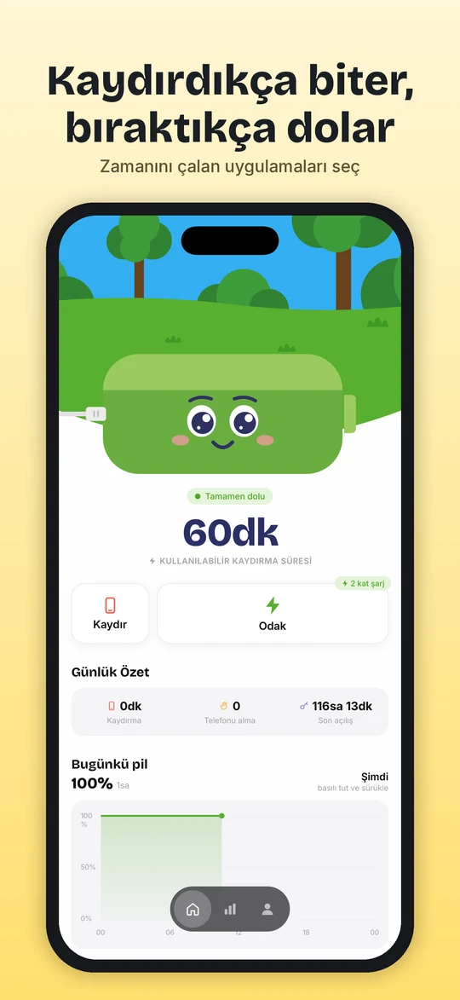
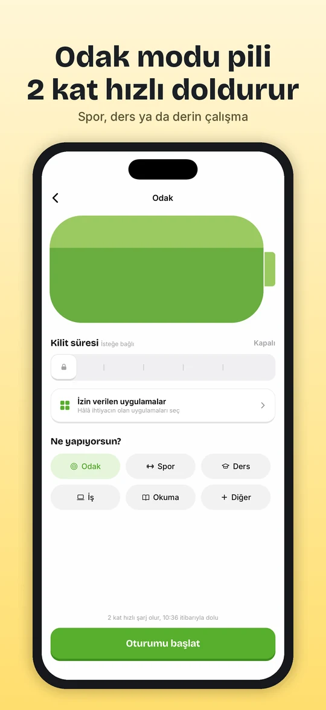

iPhone için dijital detoks uygulaması: bir anda bırakmadan
Dijital detoks, telefonunu bir hafta sonu boyunca çekmeceye kapatmak anlamına gelmek zorunda değil. Kalıcı olan detoks genelde günlüktür: daha az amaçsız kaydırma, geri kalan her şey için daha çok zaman. Amaç telefondan kaçmak değil, onu bilinçli kullanmak.
Sürdürebileceğin bir detoks planla
- En çok zamanını alan birkaç uygulamayı seç; işine yarayanlara dokunma.
- Tam yasak yerine günlük bir bütçe belirle.
- Spor, ders ya da derin çalışma için telefonsuz zaman blokları ayır.
- Kademeli azalt: her gün birkaç dakika.
- İlerlemeni görmek için haftanı takip et.
ScrollVolt nasıl yardımcı olur?
ScrollVolt bu adımların her birini karşılar. Seçtiğin uygulamalar, kullandıkça azalan ve gün içinde kendiliğinden dolan bir kaydırma pilini paylaşır. Kaç dakikanın kilidini açacağına pili sürükleyerek sen karar verirsin; pil sıfırlandığında uygulamanın yerine sakin bir ekran çıkar. Odak seansları, spor yaparken ya da ders çalışırken dikkat dağıtan uygulamaları kilitli tutar ve pili iki kat hızlı doldurur. Yarıya İndir Hedefi günlük sınırını her gün 5, 10 ya da 15 dakika düşürür; haftalık eğilim de işe yarayıp yaramadığını gösterir.


Üstelik gizliliğine saygılı: ScrollVolt, Apple’ın Ekran Süresi altyapısını kullanır ve her şey iPhone’unda çalışır; hesap yok, takip yok, reklam yok.
Sık sorulan sorular
Dijital detoks nedir?
Alışkanlıklarını sıfırlamak için ekranlara ya da belirli uygulamalara bilinçli olarak ara vermek. Bu, telefonsuz bir gün de olabilir, daha küçük bir günlük sınır da.
Bütün telefonu kilitlemem mi gerekiyor?
Hayır. Günlük kullanımda ScrollVolt yalnızca seçtiğin uygulamaları sınırlar. Geri kalan her şey her zamanki gibi çalışır.
ScrollVolt Türkçe mi?
Evet. Uygulama Türkçe, İngilizce, Almanca ve İspanyolca olarak kullanılabilir.
ScrollVolt’u iPhone’unda dene
ScrollVolt Premium, 3 günlük ücretsiz denemeyle başlayan yıllık bir aboneliktir ve Apple Hesabı ayarlarından dilediğin zaman iptal edebilirsin. Tek seferde ödemeyi mi tercih edersin? Ömür boyu kullanım için tek seferlik bir seçenek de var.
iPhone içinApp Store’dan indir